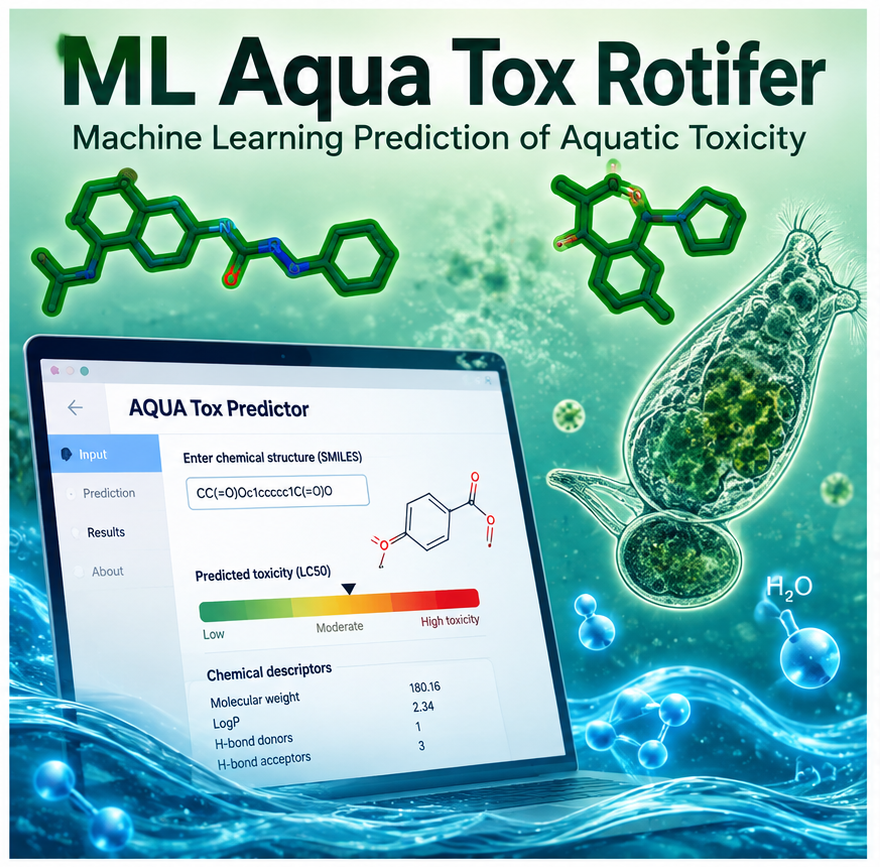
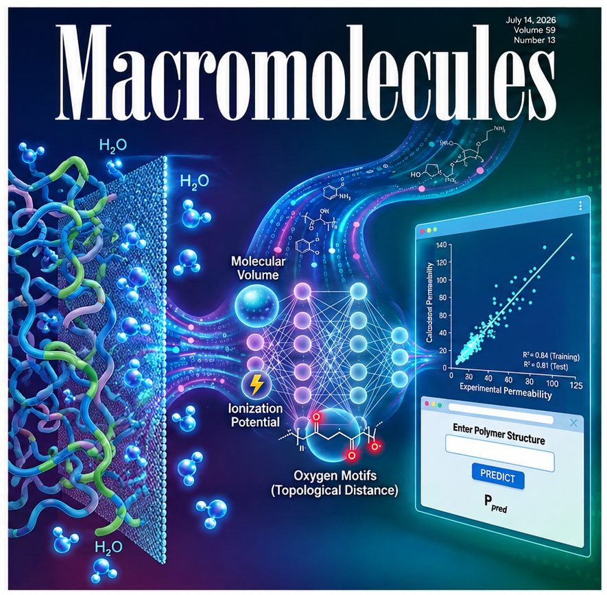
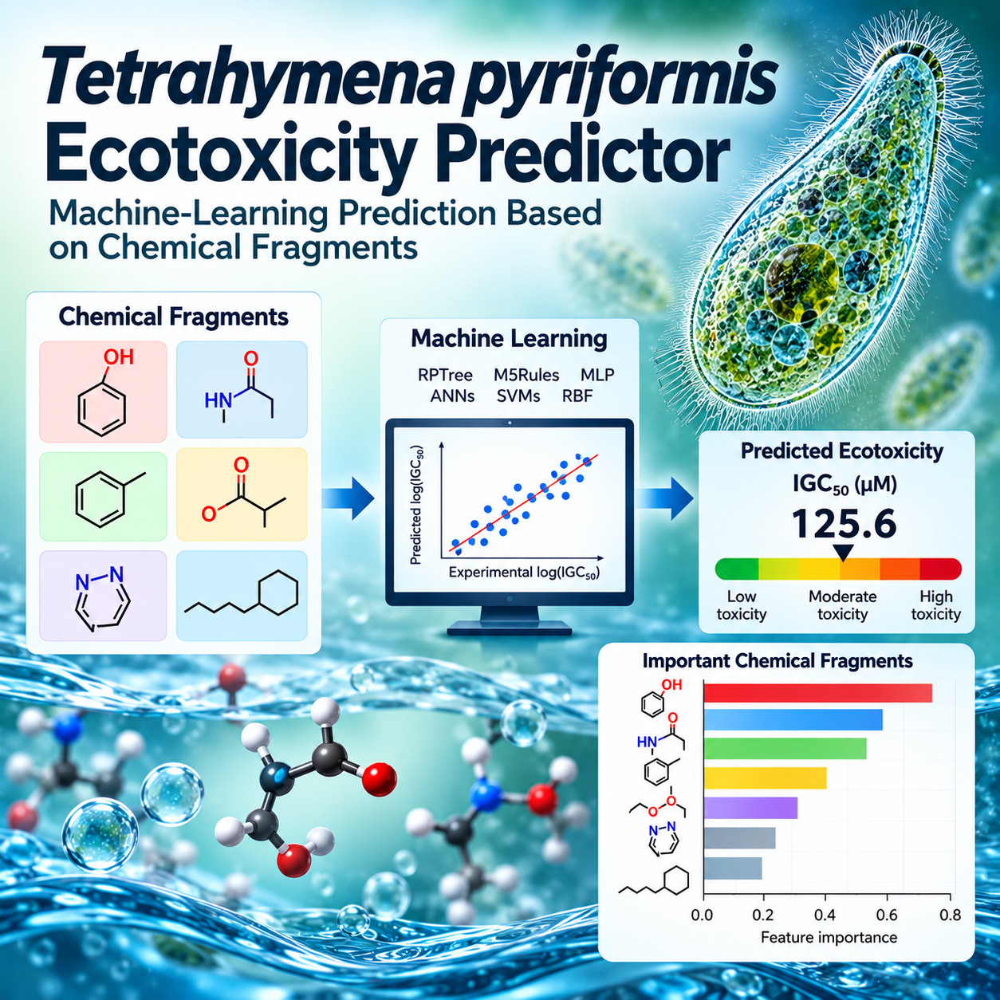
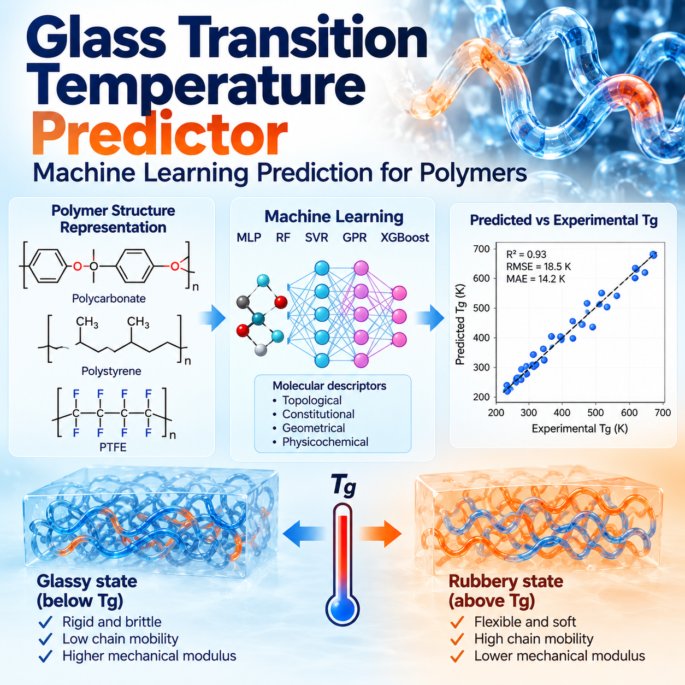

AQUA Tox
A data-driven web application for predicting aquatic toxicity of organic chemicals. The platform translates cheminformatics and machine-learning models into an accessible tool for rapid chemical-safety assessment and screening.
Scientific software
Open and accessible computational tools for cheminformatics, molecular modeling, materials informatics, and data-driven chemical research.
From methods to reusable research tools
My software development focuses on translating computational chemistry, cheminformatics, and machine-learning methods into reproducible tools for researchers, students, and experimental collaborators. These resources range from interactive prediction applications to scientific Python libraries and automated computational workflows.
Interactive research tools

A data-driven web application for predicting aquatic toxicity of organic chemicals. The platform translates cheminformatics and machine-learning models into an accessible tool for rapid chemical-safety assessment and screening.

An interactive prediction tool for estimating water permeability from polymer chemistry and relevant material or experimental conditions. The application is designed to make our data-driven polymer transport models accessible for screening and materials discovery.

A free web application for predicting the ecotoxicity of organic compounds in Tetrahymena pyriformis. The model uses chemical-fragment descriptors and machine learning to predict toxicity based on the concentration associated with 50% growth inhibition (IGC50).

A free web application for predicting the glass transition temperature (Tg) of polymeric materials using a support vector machine (SVM) regression model. Tg is a key property that defines the transition between glassy and rubbery behavior and strongly influences polymer flexibility, mechanical performance, molecular mobility, processing conditions, and practical operating limits.
Open-source development
Reusable software libraries and research code supporting molecular descriptors, machine learning, chemical data analysis, and reproducible computational research.
An open-source Python package for generating additive mixture descriptors for multicomponent materials. MixtureMetrics implements 12 mixture functions spanning property-based, concentration-weighted, and deviation-combination representations for mixture-based QSPR/QSAR and machine-learning workflows.
Collaborative software · Coauthor of the associated peer-reviewed SoftwareX publication
PyPI package Source code SoftwareX publication
R. A. Mahini, G. M. Casanola-Martin, S. A. Ludwig, B. Rasulev, SoftwareX 28 (2024) 101911.
An open-source Python toolkit for combinatorial and cheminformatics workflows, designed to support reproducible molecular data analysis and computational chemistry research.
Research infrastructure
Current and emerging computational directions connecting molecular representation, simulation, machine learning, and materials research. Projects still under development are presented at a high level while detailed methods and results remain unpublished.
Research in progress
Developing graph-based machine-learning approaches that integrate molecular structure, composition, and experimental conditions for predictive modeling of polymer properties.
Research in progress
Developing molecular-simulation approaches to investigate polymeric materials and interfaces, with emphasis on connecting molecular-scale interactions to experimentally relevant material behavior.
Research in progress
Exploring electronic-structure and surface-modeling approaches for understanding molecular interactions, adsorption, and chemically meaningful properties at interfaces and in functional materials.
Simulation and analysis workflows combining molecular structure, adsorption calculations, and data-driven analysis for porous and functional materials.
Research reproducibility
Research-oriented notebooks are being developed to make molecular descriptor generation, model evaluation, and graph-based molecular representation easier to reproduce and extend. Student-focused instructional notebooks remain available on the Teaching page.
A research-oriented workflow for molecular data preprocessing and generation of machine-learning-ready representations, including RDKit and Mordred 2D descriptors, Morgan fingerprints, MACCS keys, molecular standardization, quality control, and feature filtering.
A reproducible workflow for rigorous QSPR and machine-learning model validation, including group-aware splitting, cross-validation, external validation, predictive metrics, applicability-domain analysis, model comparison, and reproducibility reporting.
Research workflow for translating molecular and polymer structures into graph representations suitable for graph neural networks and condition-aware property prediction.